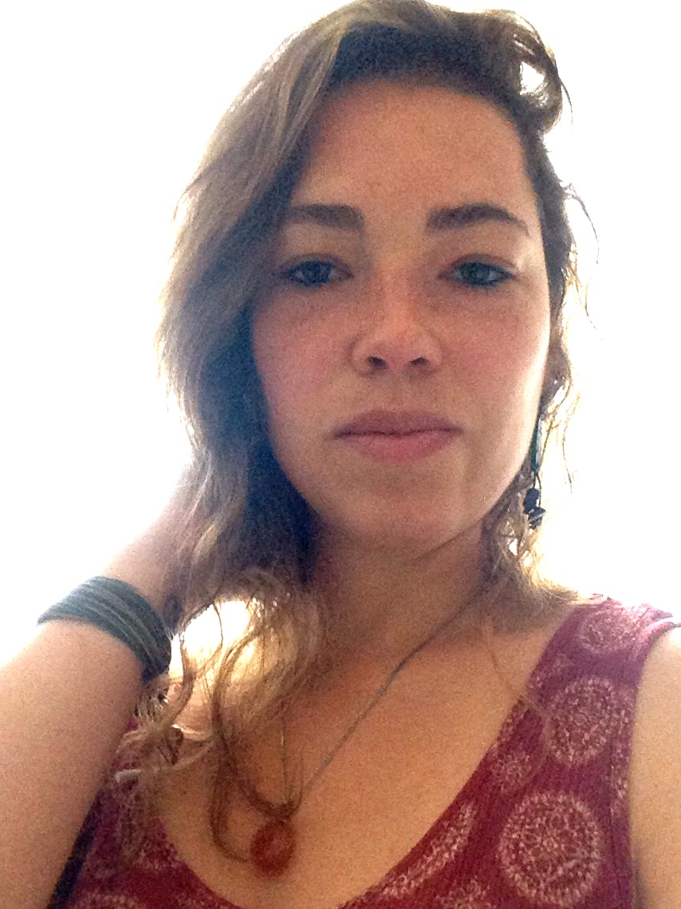
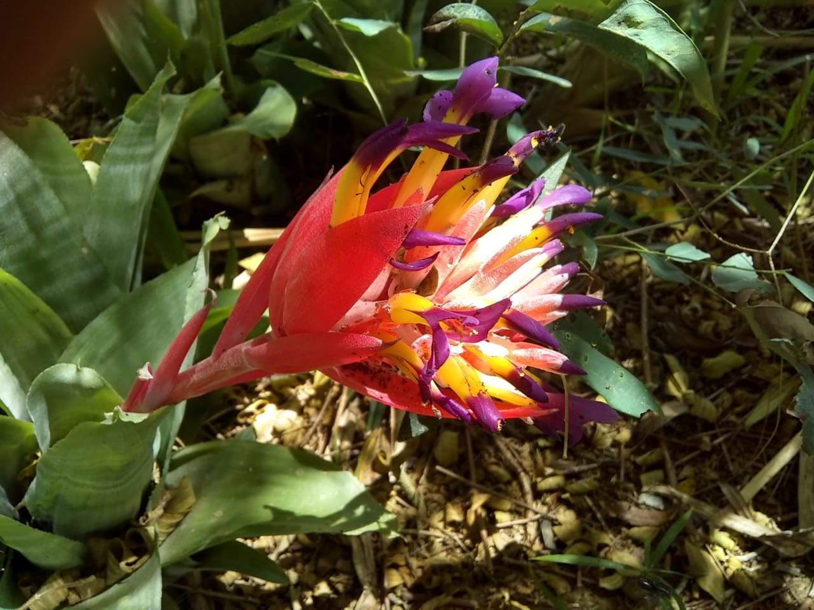
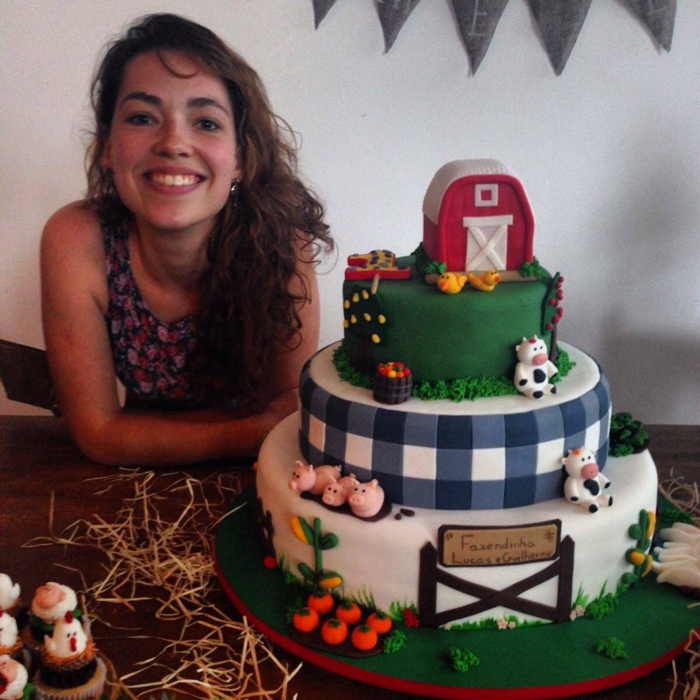

Me chamo Gabriela, tenho 32 anos, mãe, confeiteira por paixão e profissão.
Meu projeto para 2021/2022, é me formar e iniciar a carreira de Software Developer através da Trybe.
Atualmente moro com meu companheiro em um sítio na Área Rural da cidade de Nova Friburo, estado do Rio de Janeiro.
No meu tempo livre adoro fazer mudas de árvores frutíferas, que um dia farão parte de um lindo pomar.
Também cultivamos alguns temperos e legumes.
- Observadora
- Perfil Analítico
- Colaborativa
- Perfeccionista
- Pró-Ativa
- Empática e Simpática
- Curiosa
Um pouco mais de mim...

Eu e meu filho Heitor dormindo no banco de trás do carro voltando de uma viagem à Visconde de Mauá - RJ

Bromélia florida no jardim do sítio

Eu e minha família arrumados para um jantar na mesma viagem à Visconde de Mauá - RJ

Iuri brincando com Roma e Lupo

Domingo de muito sol e colheita de aipim do sítio

Cheia de orgulho na entrega de um bolo todo comestível que eu fiz trabalhado em pasta americana pro aniversário de um ano de gêmeos.

Gabi limpando os matinhos do canteiro de abóboras

Meus irmãos e eu prontos para a festa de formatura da Ana Elisa (irmã mais nova na foto).
Links Úteis
Notícias El País
PANC - Plantas Alimentícias Não Convencionais
Cozinha e Cultura
Confeitaria